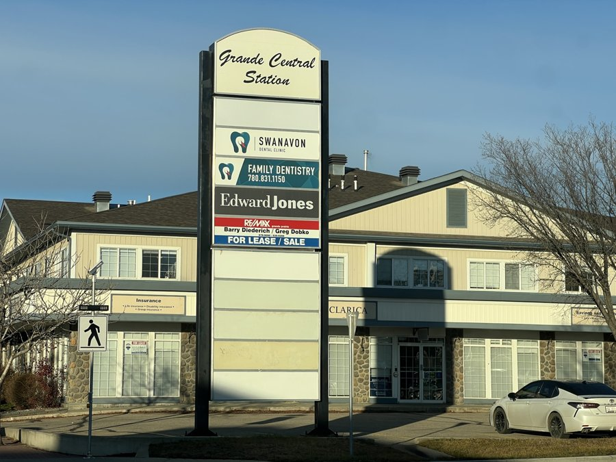

Be visible before they arrive.
Put your name and logo where people can see them from the street, before they reach your front door.
Your business is here. Let’s make sure customers can spot it. A place on your development’s pylon sign puts your name where people can see it from the street—and helps them find their way to your door.
Want to lease a sign?For tenants at Junction Point Village, Northridge Business Centre & Grande Central Station.

Find your location
Find the development where your business is located, then select a sign to view its vacant panels.
Grande Prairie, Alberta.
Select a pin to view the sign and its vacant panels.
Contact us to confirm current panel availability and pricing.
Our backlit panels are 2′ high × 8′ wide. Adjacent panels can be combined: two panels create a 4′ × 8′ space, and three create a 6′ × 8′ space. Larger configurations depend on adjacent panel availability. Ask us about artwork, installation, and lease options.
Standard 2′ × 8′ panel · Both sides
Includes both sides of one standard panel space. Contact us for current pricing and details about combined spaces, artwork, and installation.
Make your name a familiar sight
Your storefront tells people who you are when they arrive. A pylon sign helps them spot your business from the street—whether they’re coming for an appointment or passing by on their everyday route.
Put your name and logo where people can see them from the street, before they reach your front door.
Give first-time visitors a clear landmark to look for when they’re finding your business.
If your business is located in one of these developments, ask about space on the pylon signs serving that property.
Let’s get you on the sign
Help customers find you from the street. Tell us your development, and we’ll discuss space on its signs, pricing, and what’s needed to get your name on the sign.